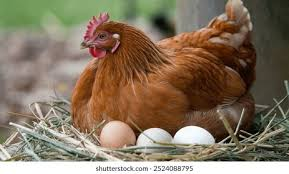
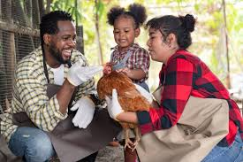

3 Basic Tips for Raising Healthy Chickens
- Provide clean water every day.
- Use a balanced feed for your flock.
- Keep the coop dry and well-ventilated.
Read updates and simple tips from SunnyNest Poultry Farm.


Schools and families can book simple tours to see our birds, learn about feed, and watch how eggs are collected.